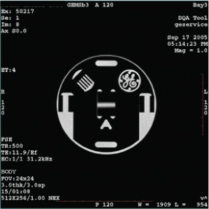
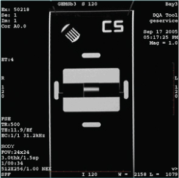

Reviewing DQA images and finalization
Prerequisites
note: Before doing the steps in this section, check the following:
- The latest exam has images labeled Axial (Coronal) and at least one of those images looks like (regarding the shapes and positions of phantom features) the axial (coronal) example image shown in this section.
- The acquired axial (coronal) image looks like the axial (coronal) example shown in this section (even if degraded by low SNR, ghosting, distortion, and so on).
If the axial (coronal) image does not look like the axial (coronal) image example in this section, a gradient wiring/setup problem exists. See Troubleshooting the Daily Quality Assurance (DQA) II tool.
Procedure
- Open the browser.
- Review the last exam.
The DQA tool scans both axial and coronal images. Each scan has its own separate exam. The images to target for review (if needed) are those from the most recent DQA related exam.
Figure 1. Example axial image at isocenter, post-calibration

Figure 2. Example coronal image

Finalization
- If this procedure was done as a standalone procedure, do a SaveInfo to save the newly created isovector and gradient calibrations. See Saving information. Otherwise, continue with regular system calibrations.